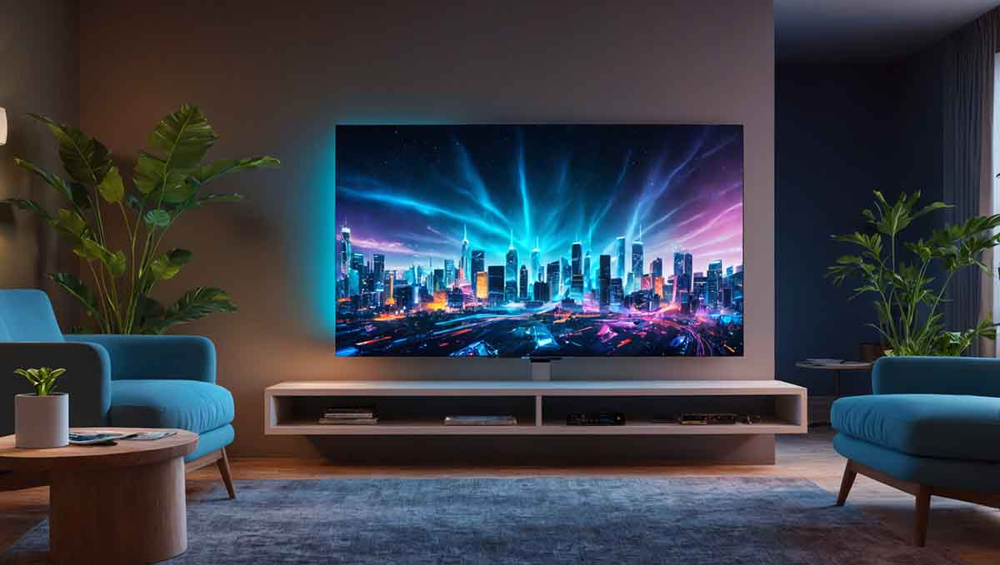

TV Mounting Services
Want your TV mounted safely and professionally without the hassle? Our TV mounting experts in Austin and the surrounding areas handle everything — secure wall mounting, clean cable hiding, and complete system setup so you can sit back and enjoy the show.

Price
$100–$300 depending on TV size, wall type, and mounting complexity. A standard 40–55 inch TV usually costs around $150. Larger TVs or complex installations with additional wiring or mounts can reach $300.

Why Choose Professional TV Mounting?
- Safe & Secure: Prevent dangerous falls with proper mounting on studs or reinforced brackets — critical in Austin homes with kids and pets.
- Clean Cable Management: We hide all wires for a sleek, professional look.
- Perfect Viewing Angle: We set the ideal height and tilt for comfortable viewing from any seat.
- Full Equipment Setup: Connect your soundbar, streaming devices, gaming consoles, and test everything.

Our TV Mounting Process
- Assessment: We visit your Austin-area home to evaluate wall type, stud locations, TV size/weight, and your viewing setup.
- Secure Mounting: We locate studs or use reinforced mounting solutions and install a heavy-duty bracket rated for your TV.
- Cable Management: We run and conceal wires through the wall (in-wall) or use discreet cord covers.
- Final Setup & Testing: We mount the TV, connect all devices, program remotes, and test the full system for optimal performance.

Frequently Asked Questions
How much does TV mounting cost in Austin?
TV mounting in Austin typically costs between $100 and $300. A basic 55" TV on standard drywall starts around $100–$150. Prices go up for larger 65–85" TVs, in-wall cable concealment, brick or stone walls, or mounting above fireplaces. We provide a clear, upfront price after seeing your specific setup in areas like Cedar Park, Leander, Bee Cave, or Round Rock.
Do you offer TV mounting services in Cedar Park, Leander, and Round Rock?
Yes! We provide professional TV mounting throughout Austin and all surrounding communities including Cedar Park, Leander, West Lake Hills, Bee Cave, South Austin, North Austin, East Austin, Bastrop, Kyle, Georgetown, Pflugerville, and Round Rock.
Is it safe to mount a TV yourself as a DIY project?
DIY TV mounting can be risky if you don’t locate studs correctly or use the right hardware. Many Austin homeowners have experienced TVs falling due to improper installation, especially with heavier modern flat screens. Professional mounting ensures your TV is securely anchored and properly balanced.
Can you hide all the TV wires in the wall?
Yes, we specialize in clean in-wall cable concealment. We fish HDMI, power, and other cables behind drywall for a completely wireless look. This is very popular in newer homes in Leander, Cedar Park, and Pflugerville.
How long does professional TV mounting take in Austin?
Most TV mounting jobs in the Austin area take 1–2 hours. Larger TVs, in-wall wiring, or complex setups (soundbars, multiple devices) may take up to 3 hours. We work efficiently and clean up before we leave.
What size TVs can you mount?
We mount all sizes from 32" up to 85" and larger. Heavier TVs require stronger mounts and sometimes additional wall reinforcement — something we handle regularly in homes across West Lake, Bee Cave, and Bastrop.
Do you mount TVs over fireplaces in Austin homes?
Yes, we frequently mount TVs above fireplaces. We use special tilting mounts and ensure proper height and angle for comfortable viewing without neck strain.
Will you connect my soundbar, Apple TV, and gaming console during installation?
Absolutely. We fully set up and test all your connected devices so everything works perfectly the moment we’re done.
Is professional TV mounting worth it in Central Texas?
Yes — especially in Austin and the Hill Country. Proper mounting protects expensive TVs from falls, improves viewing experience, and gives your living room a clean, modern look that adds to your home’s value.
Do I need to be home during the TV mounting appointment?
It’s preferred but not always required. We can coordinate with you and often work while you’re at work as long as we have access and clear instructions.
What type of walls can you mount a TV on in Austin homes?
We mount on standard drywall, brick, stone, concrete, and plaster. For non-standard walls we use appropriate anchors and reinforcement to ensure safety.
How soon can you schedule TV mounting in the Austin area?
We can usually schedule TV mounting within 1–3 business days in Austin, Cedar Park, Round Rock, Pflugerville, Leander, and nearby communities. Same-week appointments are often available.

Get Your TV Mounted Today!
Ready for a safe, clean, and perfectly positioned TV? Contact Moody Home Services for professional TV mounting in Austin, Cedar Park, Leander, Round Rock, Pflugerville, and all surrounding areas. Call or fill out the form for a fast quote!